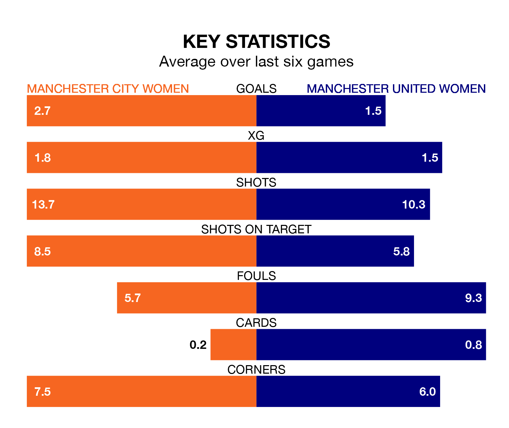

Two of the FA Women's Super League's top sides face each other at the Academy Stadium in Saturday lunchtime's kick-off, when second-placed Manchester City Women host fourth-placed Manchester United Women.
Manchester City have picked up 13 wins and one draw from 16 games so far this season, and sit 12 points above the visitors going into the 12.30pm match.
The Red Devils, meanwhile, have won eight and drawn four, picking up 28 points.
Manchester City are in exceptional form in the FA Women's Super League, with six wins and no losses from their last six games.
With three wins and a draw over that period, Manchester United's form is much worse – they have taken 10 points from 18, compared to City's 18.
With 42 goals in 16 games so far this season, the hosts are the league's second-highest scorers with 2.6 goals per game. And they are conceding fewer than average, letting in 10 goals at a rate of 0.6 per game.
The Red Devils are also above average scorers, with 2.1 goals per game, compared to a league average of 1.7. They have conceded 1.2 goals per game.
In Khadija Monifa Shaw, Manchester City have the league's most on-form striker so far this season. She has notched 16 goals in 15 appearances.
Her goal rate of one every 73 minutes is quicker than that of Nikita Parris, the away side's top scorer with a goal every 115 minutes, and a total of eight goals in 15 games.
In the last 10 years, Manchester City and Manchester United have played each other on 14 occasions. Manchester City won seven of them, Manchester United three, and they drew four times.
On average, City scored 1.7 goals and the Red Devils 1.1 in those matches.
Their last meeting was on January 24, when Manchester City won 2-1 at home.
Manchester City's last match was on Sunday, a 4-1 win against Brighton and Hove Albion Women, with Laura Coombs, Lauren Hemp, Mary Fowler and Shaw getting the goals for City.
Manchester United beat Bristol City Women 2-0 last time out, also on Sunday, with Lisa Fjeldstad Naalsund on the scoresheet.
Updated: 10:19 (UTC), 22/03/24